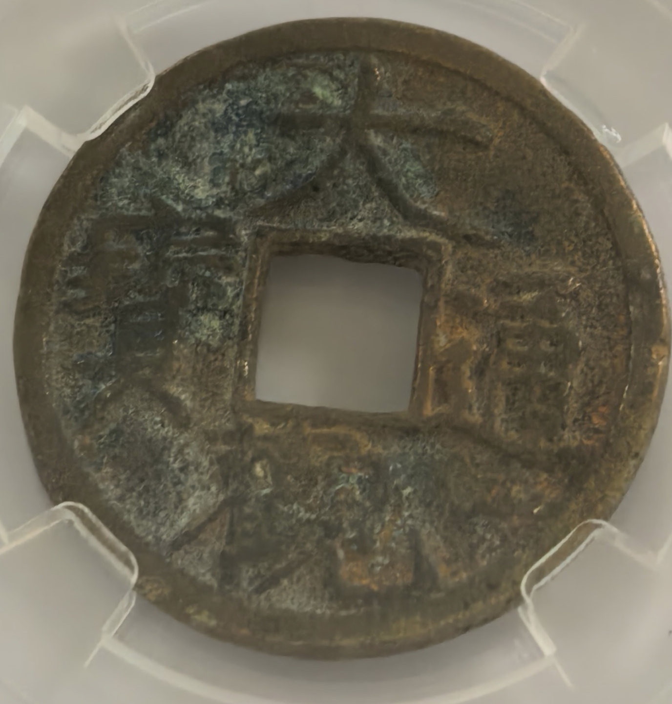

大观通宝
九百年的时光之旅
北宋 · 大观元年 · 公元一一〇七年
↑ 下滑开始 ↑
壹
帝王笔墨
一个皇帝的书法，铸造在一枚钱币上
"他可能是中国历史上最有才华的皇帝，
却也是最不合格的帝王。"
宋徽宗赵佶，一位被皇位耽误的艺术家。他独创瘦金体，笔画如铁画银钩，锋利而挺拔。他将自己的书法刻在了帝国的货币上——这在中国历史上极为罕见。
大观通宝，便是他御笔亲书的产物。四个字，方寸之间，尽显帝王气度。
贰
铁画银钩
瘦金体的四个字
大
劲挺开张
观
锋利如匕
通
流畅下行
宝
稳正宽绰
仅二十五毫米的圆面上，四个字疏密得当，笔笔如刀。
"观"字末笔锋利如匕首——这是后世鉴定真伪的核心观察点。
仿品此处常显绵软无力，真品则锐利干脆，一气呵成。
叁
大观之年
公元一一〇七年，世界看上去很美
经济
GDP占世界总量的四分之一以上，汴京人口超过百万，是当时世界上最繁华的城市
文化
苏轼、黄庭坚、米芾、蔡襄——宋四家的书法辉煌照耀着这个时代
艺术
徽宗建立皇家画院，独创瘦金体，中国美学达到一个高峰
科技
活字印刷术广泛应用，指南针用于航海，火药武器初现
然而危机已在暗处酝酿——蔡京专权多年，花石纲耗尽国库，边防空虚……
东南民怨日深，十余年后终将爆发方腊起义。这个帝国，金玉其外。
肆
翻砂铸铜
一枚钱币的诞生
壹
御书钱文
宋徽宗亲笔书写"大观通宝"四字瘦金体
贰
雕刻雕母
宫廷工匠以御笔为蓝本，在铜材上精细雕刻祖钱，全国仅数枚
叁
铸造母钱
用雕母翻铸若干铜质母钱，修整打磨后分发至各地钱监
肆
翻砂铸子钱
将母钱压入细砂成型，合箱后浇注约一千一百度的熔铜液，冷却打磨后流入市面
伍
盛世余晖
繁华的背后，大厦将倾
📜
政治
蔡京专权
党争不断
🪨
财政
艮岳花石纲
耗尽国库
⚔️
军事
重文轻武
边防空虚
🔥
民生
赋税沉重
民不聊生
大观通宝就诞生于这个
"表面繁华、内里腐朽"的时代。
它是盛世的见证者，也是崩塌的前奏曲。
陆
观卦之光
大观，取自《易经》第二十卦
䷓ 风地观 上巽下坤
"大观在上，顺而巽，中正以观天下。"
徽宗取此为年号，意在彰显以宏大视野治理天下的雄心。然而历史的讽刺在于——他确实拥有宏大的艺术视野，却在治国上目光短浅。
观卦六四爻辞：
"观国之光，利用宾于王。"
见识了国家的光辉，便能在人生的殿堂中成为贵客。
柒
靖康之变
公元一一二七年，一个王朝的终结
大观四年，年号废止。再过十七年，金兵攻破汴京，掳走徽宗、钦宗二帝，北宋灭亡。
无数枚大观通宝在这一刻散落——有的随主人逃难，有的被匆匆埋入地下，有的流入金国领土。
一个王朝覆灭了，但这些钱币留了下来。
捌
九百年
从铸造到今天
1107
铸造成型
1107-1127
民间流通
1127
靖康之变
1127-至今
…
流传于世
今天
传承至今
九百多年间，铜表面缓慢氧化，形成了温润自然的包浆。铜质致密者更耐腐蚀，品相保存更为完好。
这是时间给这些钱币的礼物。
它是皇帝的艺术品，
也是百姓的零花钱。
它见过北宋最后的辉煌，
也见证了那个王朝的崩塌。
九百多年后，大观通宝上的瘦金体依然清晰如刀刻。铁画银钩之间，是一个帝王的审美、一个时代的光辉、一段跨越千年的故事。
一枚钱币，一部微缩的北宋史。
大观通宝 · 文化故事 · 2026